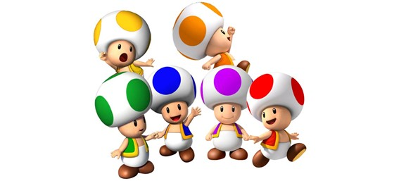

 Toad, conocido en Japón como Kinopio es un personaje ficticio de los videojuegos de la franquicia de Mario. Creado por el diseñador de videojuegos japonés, Shigeru Miyamoto, Toad es representado como un ciudadano del Reino Champiñón y es uno de los asistentes más fieles de la Princesa Peach; trabajando constantemente en su favor.
Los Toads generalmente interpretan un papel auxiliar en la franquicia de Mario y sus juegos de acción, como Toadsworth, presentado en Super Mario Sunshine y la asociación Toad Brigade (Brigada Toad) en Super Mario Galaxy. A pesar de esto, los Toads también interpretan el papel de héroes en algunos juegos.
Son los habitantes del Reino Champiñón. Su característica principal es sus grandes cabezas de seta de diversos colores y su gran habilidad para organizar fiestas (como en Mario Party 4, donde al lado de Goomba, Koopas, Boos y Shy Guys organizaron la fiesta). Son gente de actitud pacífica, que le guarda un gran cariño y respeto a la Princesa Peach, mas no hacia su padre, el Rey Hongo
En el castillo de la princesa Peach, así como en el Reino Champiñón, se pueden observar muchos Toads, y aunque se parecen mucho, sus naturalezas son muy diferentes. Los Toads se clasifican en 3 tipos: Los ciudadanos, que pasean de vez en cuando Los sirvientes, que estiman mucho a Peach y que son de colores diferentes, según sus cargos Los del Reino Judía, que viven en Lili-Champiñón. Se caracterizan por ser una gente muy sabia y con mucha cultura